ID: dog-train-n02083346_8367/felzenszwalb_gaussian_softmax
Accuracy: 0.687 -> 0.691
Mean Recall: 0.687 -> 0.691
Mean Precision: 0.692 -> 0.693
Mean F1: 0.684 -> 0.689
Target Recall: 0.427 -> 0.501
Target Precision: 0.706 -> 0.608
Target F1: 0.532 -> 0.549
Orig Pred Recall: 0.743 -> 0.709
Orig Pred Precision: 0.594 -> 0.646
Orig Pred F1: 0.66 -> 0.676
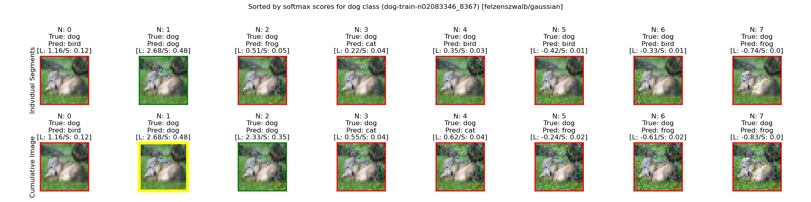 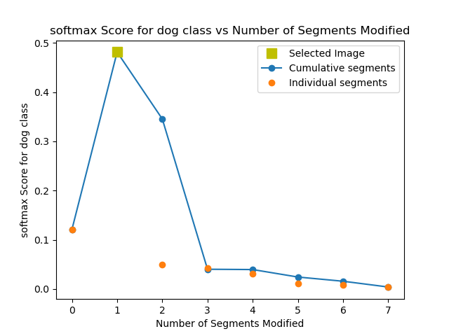 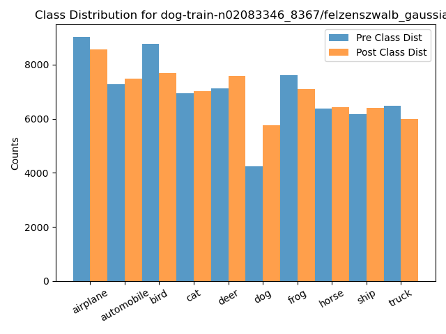ID: dog-train-n02112018_3244/felzenszwalb_gaussian_softmax
Accuracy: 0.687 -> 0.69
Mean Recall: 0.687 -> 0.69
Mean Precision: 0.692 -> 0.692
Mean F1: 0.684 -> 0.687
Target Recall: 0.427 -> 0.457
Target Precision: 0.706 -> 0.662
Target F1: 0.532 -> 0.541
Orig Pred Recall: 0.743 -> 0.725
Orig Pred Precision: 0.594 -> 0.623
Orig Pred F1: 0.66 -> 0.67
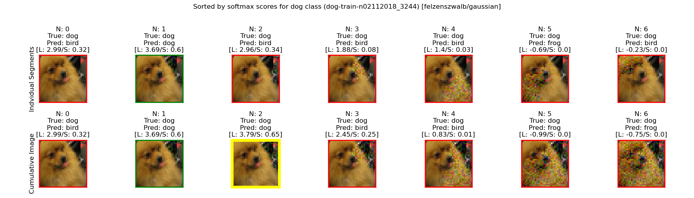 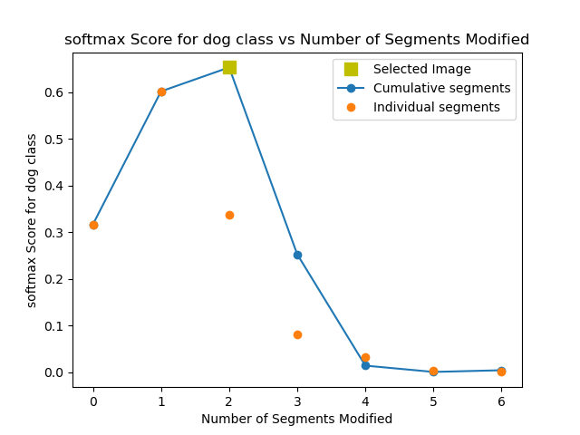 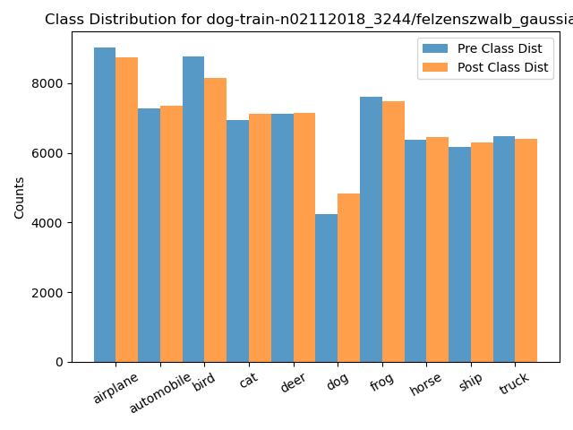ID: dog-train-n02112018_3244/felzenszwalb_masked_softmax
Accuracy: 0.687 -> 0.689
Mean Recall: 0.687 -> 0.689
Mean Precision: 0.692 -> 0.692
Mean F1: 0.684 -> 0.687
Target Recall: 0.427 -> 0.47
Target Precision: 0.706 -> 0.636
Target F1: 0.532 -> 0.541
Orig Pred Recall: 0.743 -> 0.658
Orig Pred Precision: 0.594 -> 0.705
Orig Pred F1: 0.66 -> 0.68
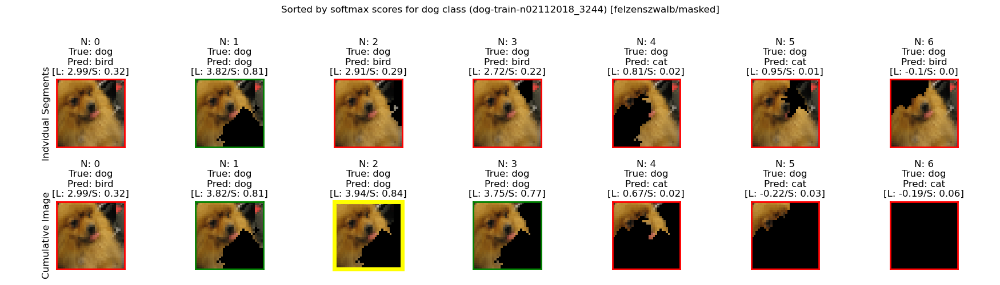 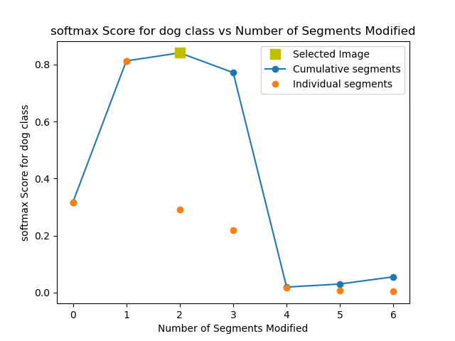 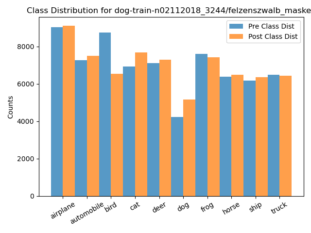ID: dog-train-n02106854_2283/felzenszwalb_gaussian_softmax
Accuracy: 0.687 -> 0.689
Mean Recall: 0.687 -> 0.689
Mean Precision: 0.692 -> 0.692
Mean F1: 0.684 -> 0.686
Target Recall: 0.427 -> 0.47
Target Precision: 0.706 -> 0.651
Target F1: 0.532 -> 0.546
Orig Pred Recall: 0.61 -> 0.575
Orig Pred Precision: 0.6 -> 0.636
Orig Pred F1: 0.605 -> 0.604
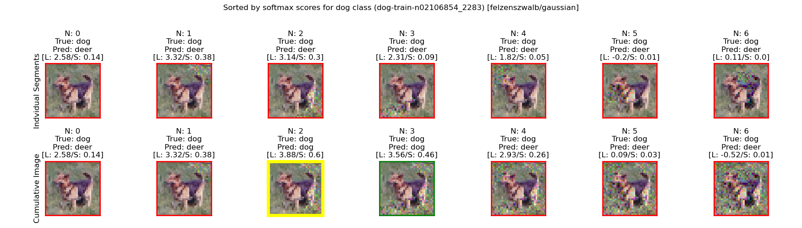 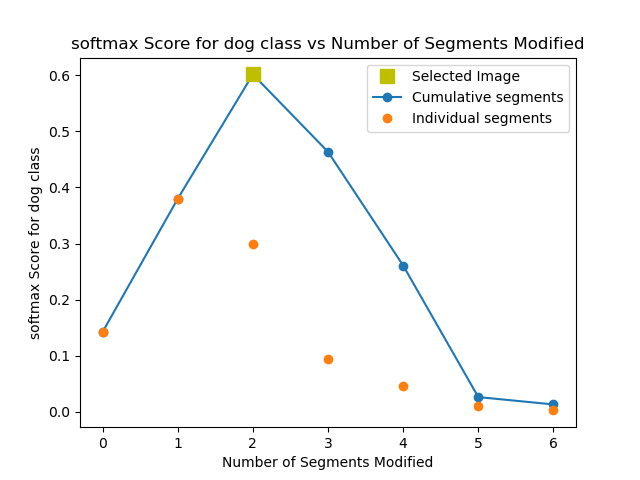 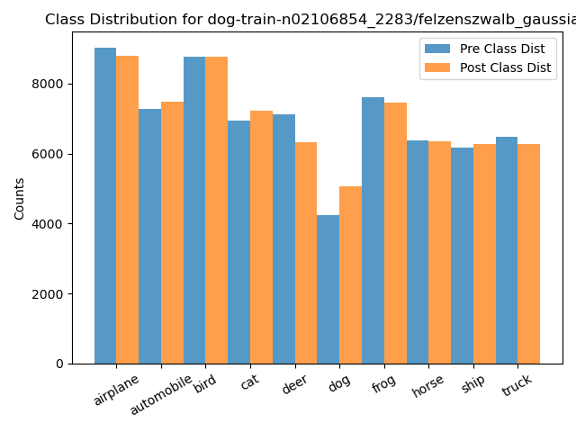ID: dog-train-n02115641_13761/felzenszwalb_gaussian_softmax
Accuracy: 0.687 -> 0.688
Mean Recall: 0.687 -> 0.688
Mean Precision: 0.692 -> 0.691
Mean F1: 0.684 -> 0.685
Target Recall: 0.427 -> 0.459
Target Precision: 0.706 -> 0.671
Target F1: 0.532 -> 0.545
Orig Pred Recall: 0.549 -> 0.511
Orig Pred Precision: 0.553 -> 0.583
Orig Pred F1: 0.551 -> 0.544
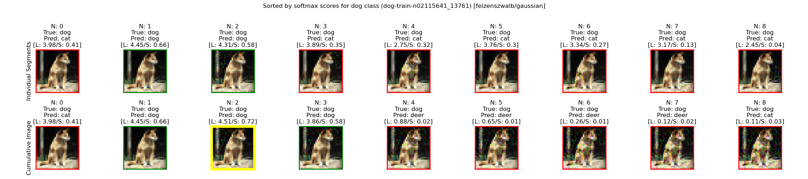 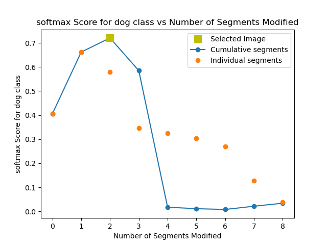 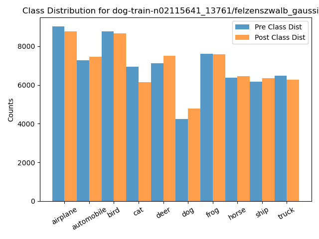ID: dog-train-n02092468_8598/felzenszwalb_masked_softmax
Accuracy: 0.687 -> 0.688
Mean Recall: 0.687 -> 0.688
Mean Precision: 0.692 -> 0.691
Mean F1: 0.684 -> 0.685
Target Recall: 0.427 -> 0.559
Target Precision: 0.706 -> 0.564
Target F1: 0.532 -> 0.562
Orig Pred Recall: 0.549 -> 0.438
Orig Pred Precision: 0.553 -> 0.646
Orig Pred F1: 0.551 -> 0.522
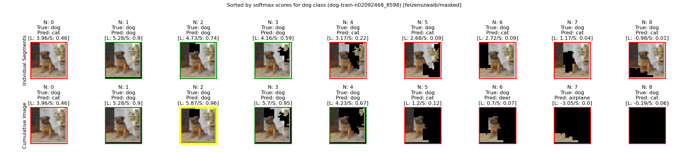 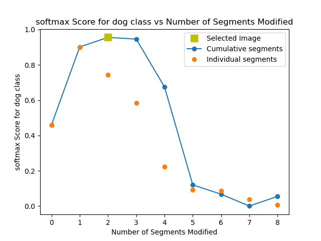 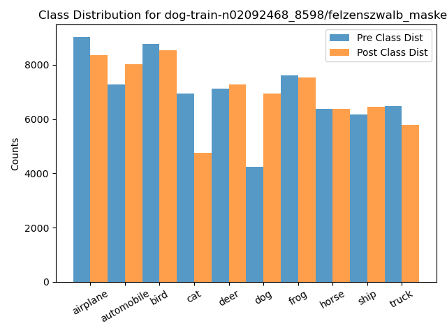ID: dog-train-n02111277_766/felzenszwalb_masked_softmax
Accuracy: 0.687 -> 0.688
Mean Recall: 0.687 -> 0.688
Mean Precision: 0.692 -> 0.69
Mean F1: 0.684 -> 0.684
Target Recall: 0.427 -> 0.454
Target Precision: 0.706 -> 0.674
Target F1: 0.532 -> 0.542
Orig Pred Recall: 0.549 -> 0.523
Orig Pred Precision: 0.553 -> 0.569
Orig Pred F1: 0.551 -> 0.545
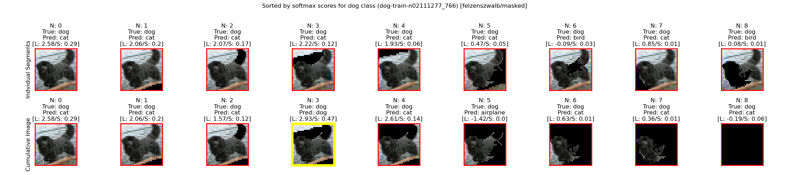 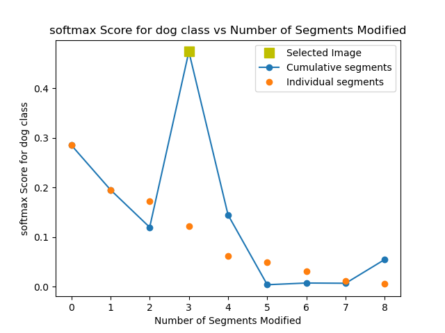 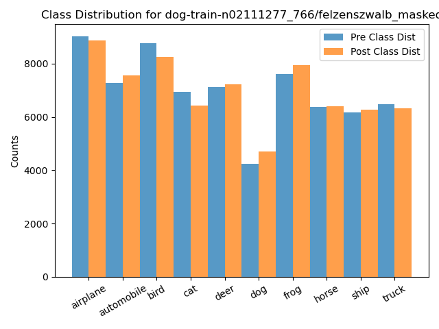ID: dog-train-n02113624_348/felzenszwalb_masked_softmax
Accuracy: 0.687 -> 0.688
Mean Recall: 0.687 -> 0.688
Mean Precision: 0.692 -> 0.691
Mean F1: 0.684 -> 0.684
Target Recall: 0.427 -> 0.524
Target Precision: 0.706 -> 0.607
Target F1: 0.532 -> 0.562
Orig Pred Recall: 0.549 -> 0.436
Orig Pred Precision: 0.553 -> 0.654
Orig Pred F1: 0.551 -> 0.523
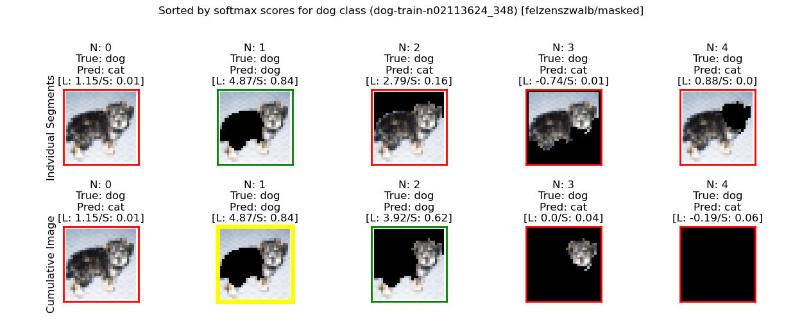 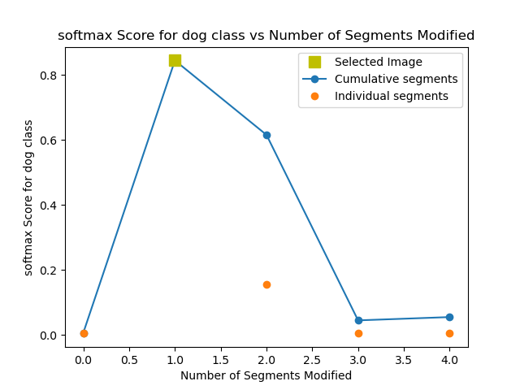 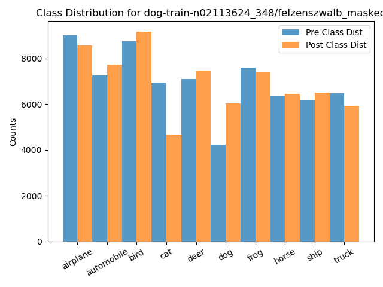ID: dog-train-n02113799_1754/felzenszwalb_masked_softmax
Accuracy: 0.687 -> 0.688
Mean Recall: 0.687 -> 0.688
Mean Precision: 0.692 -> 0.689
Mean F1: 0.684 -> 0.684
Target Recall: 0.427 -> 0.502
Target Precision: 0.706 -> 0.63
Target F1: 0.532 -> 0.558
Orig Pred Recall: 0.549 -> 0.463
Orig Pred Precision: 0.553 -> 0.624
Orig Pred F1: 0.551 -> 0.532
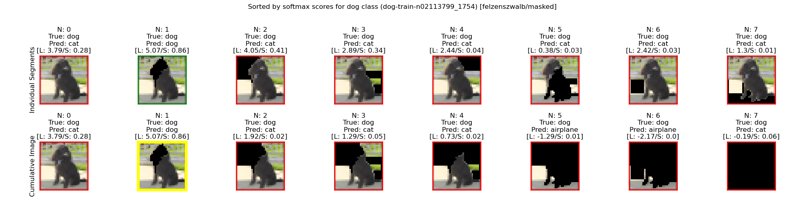 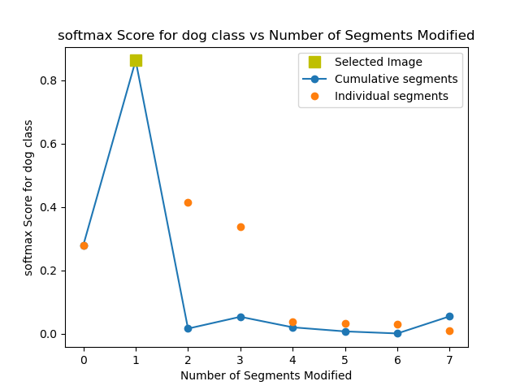 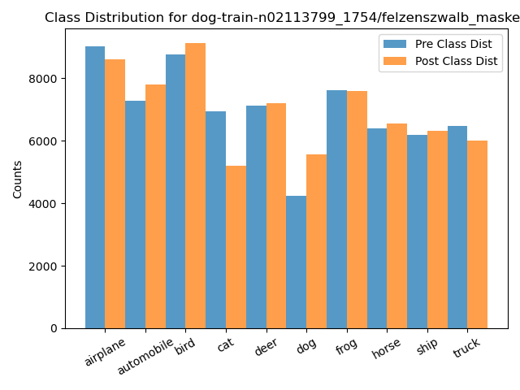ID: dog-train-n02118643_5137/felzenszwalb_masked_softmax
Accuracy: 0.687 -> 0.687
Mean Recall: 0.687 -> 0.687
Mean Precision: 0.692 -> 0.691
Mean F1: 0.684 -> 0.683
Target Recall: 0.427 -> 0.513
Target Precision: 0.706 -> 0.617
Target F1: 0.532 -> 0.56
Orig Pred Recall: 0.549 -> 0.432
Orig Pred Precision: 0.553 -> 0.656
Orig Pred F1: 0.551 -> 0.521
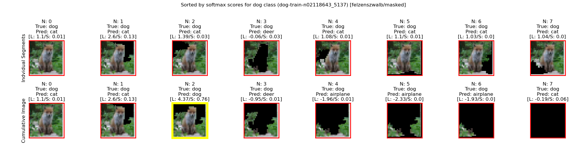 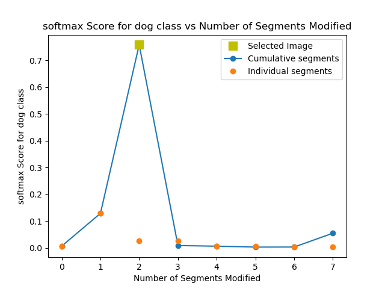ID: dog-train-n02092468_8598/felzenszwalb_gaussian_softmax
Accuracy: 0.687 -> 0.687
Mean Recall: 0.687 -> 0.687
Mean Precision: 0.692 -> 0.692
Mean F1: 0.684 -> 0.683
Target Recall: 0.427 -> 0.433
Target Precision: 0.706 -> 0.697
Target F1: 0.532 -> 0.534
Orig Pred Recall: 0.549 -> 0.536
Orig Pred Precision: 0.553 -> 0.558
Orig Pred F1: 0.551 -> 0.547
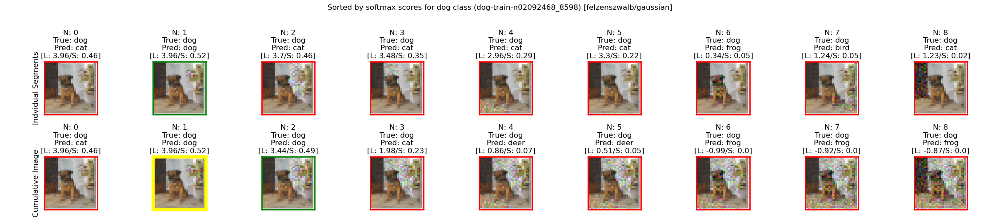 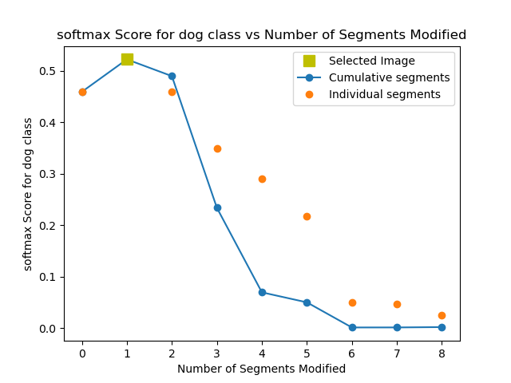 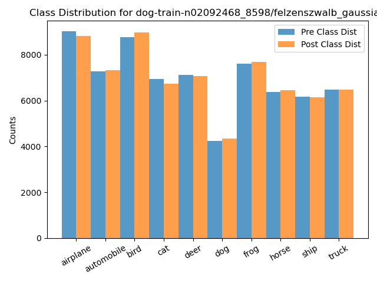ID: dog-train-n02111277_685/felzenszwalb_masked_softmax
Accuracy: 0.687 -> 0.687
Mean Recall: 0.687 -> 0.687
Mean Precision: 0.692 -> 0.691
Mean F1: 0.684 -> 0.684
Target Recall: 0.427 -> 0.589
Target Precision: 0.706 -> 0.515
Target F1: 0.532 -> 0.55
Orig Pred Recall: 0.549 -> 0.41
Orig Pred Precision: 0.553 -> 0.67
Orig Pred F1: 0.551 -> 0.509
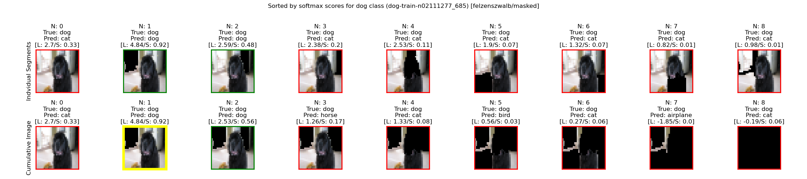 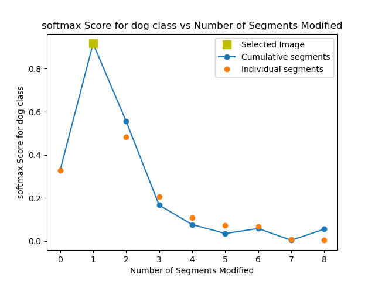 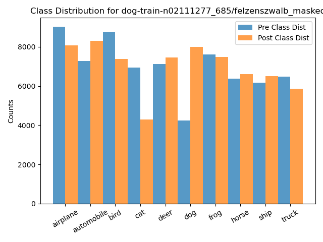ID: dog-train-n02119789_3643/felzenszwalb_masked_softmax
Accuracy: 0.687 -> 0.686
Mean Recall: 0.687 -> 0.686
Mean Precision: 0.692 -> 0.692
Mean F1: 0.684 -> 0.682
Target Recall: 0.427 -> 0.463
Target Precision: 0.706 -> 0.658
Target F1: 0.532 -> 0.544
Orig Pred Recall: 0.61 -> 0.5
Orig Pred Precision: 0.6 -> 0.715
Orig Pred F1: 0.605 -> 0.588
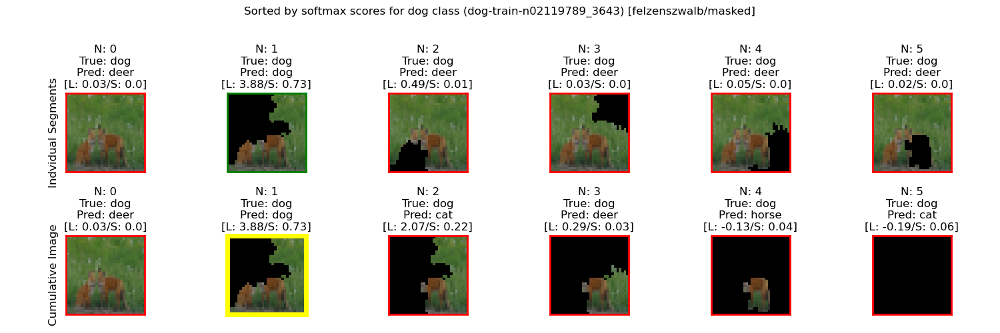 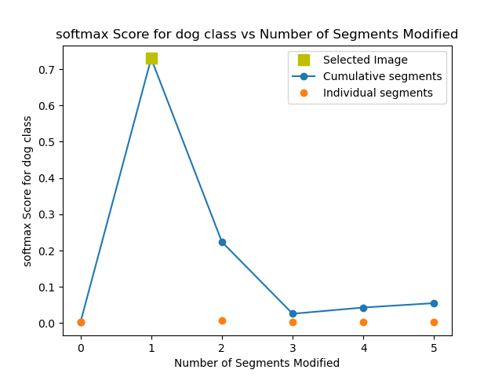 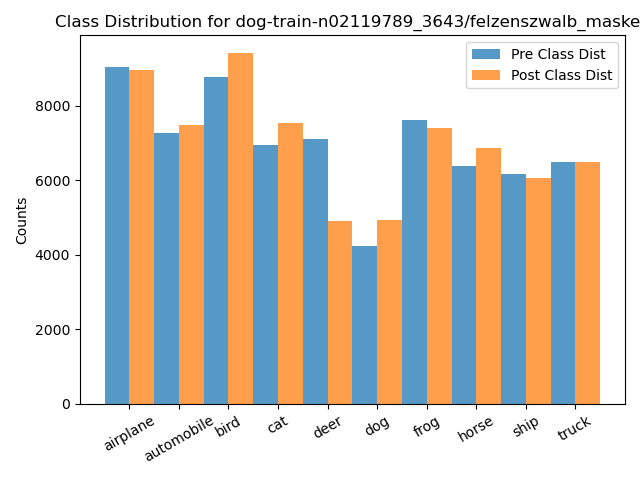ID: dog-train-n01322508_298/felzenszwalb_masked_softmax
Accuracy: 0.687 -> 0.686
Mean Recall: 0.687 -> 0.686
Mean Precision: 0.692 -> 0.694
Mean F1: 0.684 -> 0.684
Target Recall: 0.427 -> 0.598
Target Precision: 0.706 -> 0.499
Target F1: 0.532 -> 0.544
Orig Pred Recall: 0.549 -> 0.452
Orig Pred Precision: 0.553 -> 0.632
Orig Pred F1: 0.551 -> 0.527
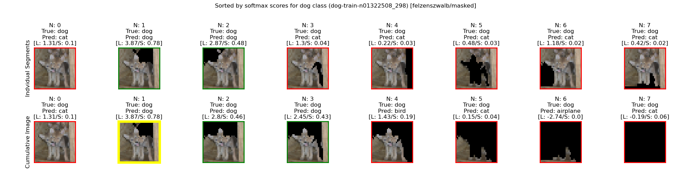 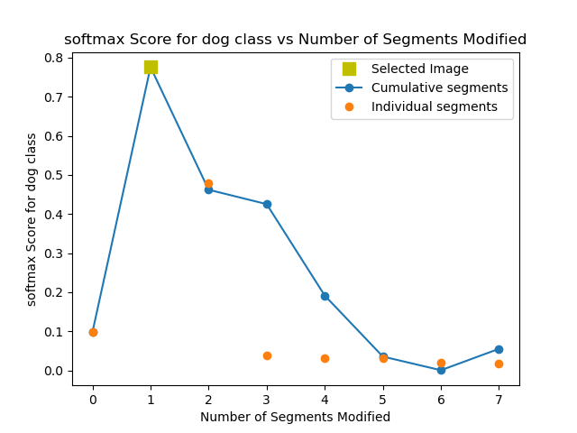 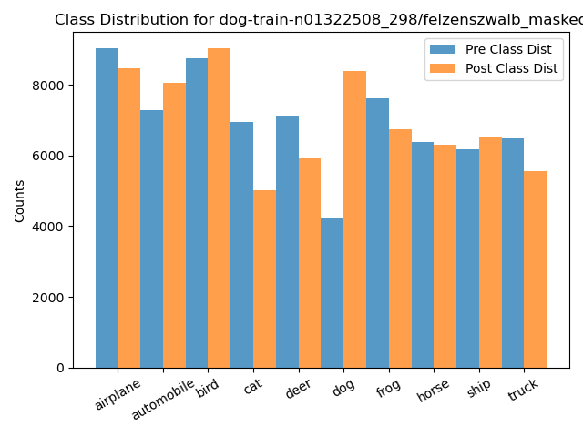ID: dog-train-n02116450_371/felzenszwalb_masked_softmax
Accuracy: 0.687 -> 0.686
Mean Recall: 0.687 -> 0.686
Mean Precision: 0.692 -> 0.692
Mean F1: 0.684 -> 0.682
Target Recall: 0.427 -> 0.585
Target Precision: 0.706 -> 0.505
Target F1: 0.532 -> 0.542
Orig Pred Recall: 0.549 -> 0.398
Orig Pred Precision: 0.553 -> 0.679
Orig Pred F1: 0.551 -> 0.502
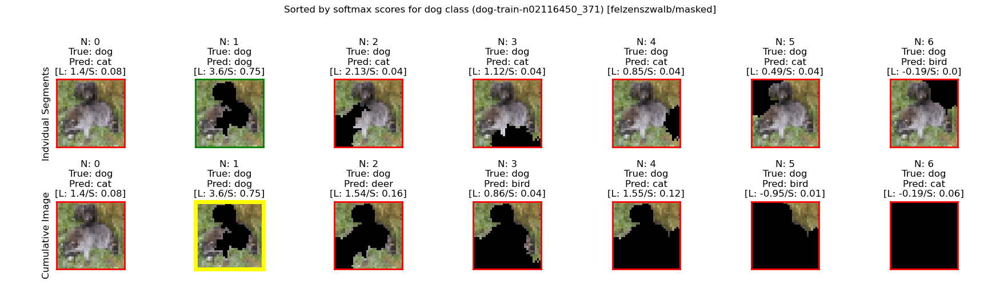 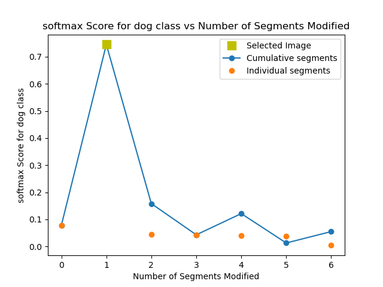 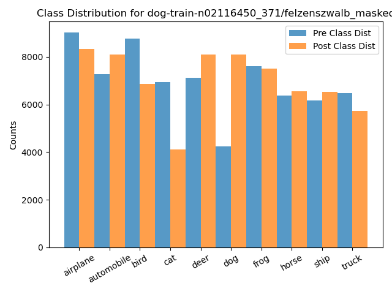ID: dog-train-n02113799_1754/felzenszwalb_gaussian_softmax
Accuracy: 0.687 -> 0.685
Mean Recall: 0.687 -> 0.685
Mean Precision: 0.692 -> 0.691
Mean F1: 0.684 -> 0.68
Target Recall: 0.427 -> 0.499
Target Precision: 0.706 -> 0.639
Target F1: 0.532 -> 0.561
Orig Pred Recall: 0.549 -> 0.428
Orig Pred Precision: 0.553 -> 0.654
Orig Pred F1: 0.551 -> 0.517
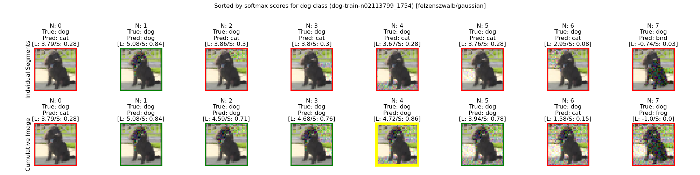 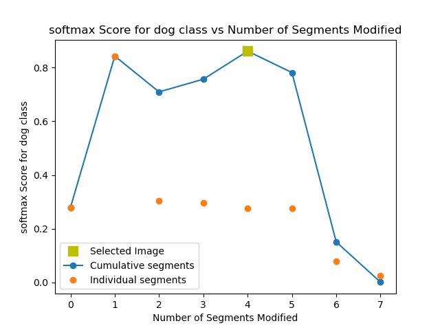 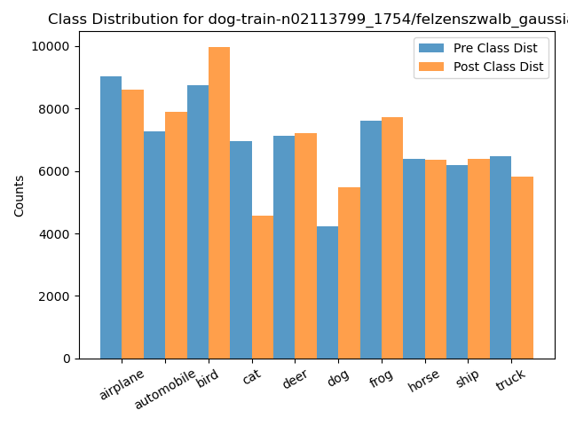ID: dog-train-n02114712_1536/felzenszwalb_masked_softmax
Accuracy: 0.687 -> 0.685
Mean Recall: 0.687 -> 0.685
Mean Precision: 0.692 -> 0.695
Mean F1: 0.684 -> 0.683
Target Recall: 0.427 -> 0.439
Target Precision: 0.706 -> 0.673
Target F1: 0.532 -> 0.531
Orig Pred Recall: 0.734 -> 0.675
Orig Pred Precision: 0.804 -> 0.865
Orig Pred F1: 0.767 -> 0.758
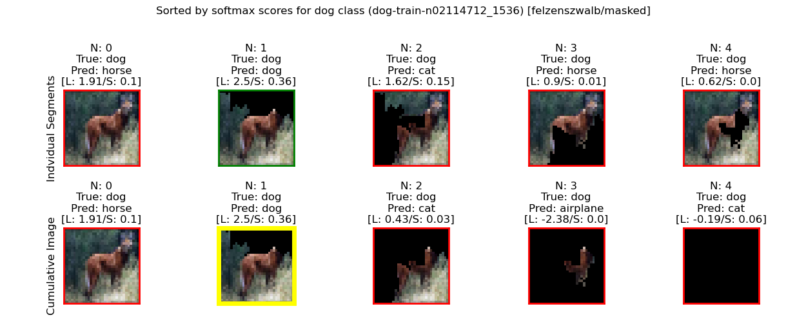 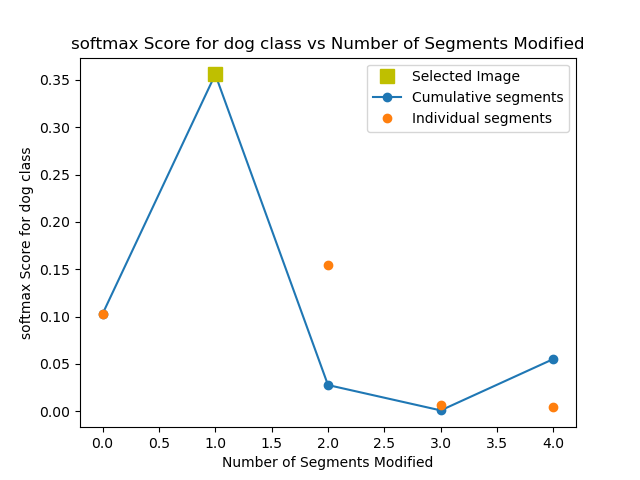 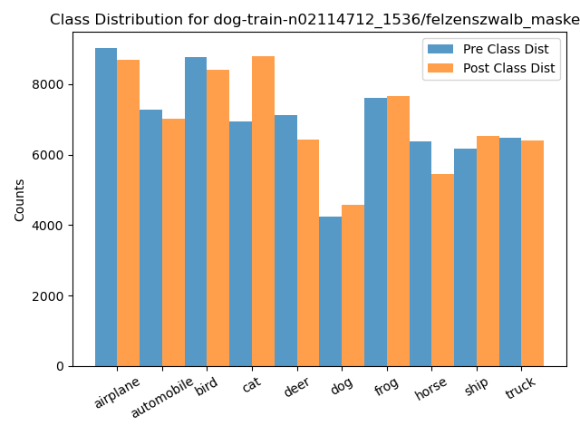ID: dog-train-n02117135_1558/felzenszwalb_masked_softmax
Accuracy: 0.687 -> 0.685
Mean Recall: 0.687 -> 0.685
Mean Precision: 0.692 -> 0.695
Mean F1: 0.684 -> 0.682
Target Recall: 0.427 -> 0.466
Target Precision: 0.706 -> 0.65
Target F1: 0.532 -> 0.543
Orig Pred Recall: 0.61 -> 0.492
Orig Pred Precision: 0.6 -> 0.725
Orig Pred F1: 0.605 -> 0.586
ID: dog-train-n02114367_9461/felzenszwalb_gaussian_softmax
Accuracy: 0.687 -> 0.684
Mean Recall: 0.687 -> 0.684
Mean Precision: 0.692 -> 0.692
Mean F1: 0.684 -> 0.68
Target Recall: 0.427 -> 0.524
Target Precision: 0.706 -> 0.612
Target F1: 0.532 -> 0.565
Orig Pred Recall: 0.549 -> 0.417
Orig Pred Precision: 0.553 -> 0.662
Orig Pred F1: 0.551 -> 0.512
ID: dog-train-n02113799_4257/felzenszwalb_masked_softmax
Accuracy: 0.687 -> 0.684
Mean Recall: 0.687 -> 0.684
Mean Precision: 0.692 -> 0.69
Mean F1: 0.684 -> 0.683
Target Recall: 0.427 -> 0.508
Target Precision: 0.706 -> 0.52
Target F1: 0.532 -> 0.514
Orig Pred Recall: 0.743 -> 0.559
Orig Pred Precision: 0.594 -> 0.81
Orig Pred F1: 0.66 -> 0.661
ID: dog-train-n02114100_6548/felzenszwalb_gaussian_softmax
Accuracy: 0.687 -> 0.684
Mean Recall: 0.687 -> 0.684
Mean Precision: 0.692 -> 0.69
Mean F1: 0.684 -> 0.679
Target Recall: 0.427 -> 0.435
Target Precision: 0.706 -> 0.704
Target F1: 0.532 -> 0.538
Orig Pred Recall: 0.549 -> 0.472
Orig Pred Precision: 0.553 -> 0.605
Orig Pred F1: 0.551 -> 0.53
ID: dog-train-n02085620_7619/felzenszwalb_masked_softmax
Accuracy: 0.687 -> 0.684
Mean Recall: 0.687 -> 0.684
Mean Precision: 0.692 -> 0.69
Mean F1: 0.684 -> 0.678
Target Recall: 0.427 -> 0.521
Target Precision: 0.706 -> 0.605
Target F1: 0.532 -> 0.56
Orig Pred Recall: 0.549 -> 0.38
Orig Pred Precision: 0.553 -> 0.718
Orig Pred F1: 0.551 -> 0.497
ID: dog-train-n02112826_1532/felzenszwalb_gaussian_softmax
Accuracy: 0.687 -> 0.683
Mean Recall: 0.687 -> 0.683
Mean Precision: 0.692 -> 0.688
Mean F1: 0.684 -> 0.678
Target Recall: 0.427 -> 0.457
Target Precision: 0.706 -> 0.683
Target F1: 0.532 -> 0.547
Orig Pred Recall: 0.549 -> 0.442
Orig Pred Precision: 0.553 -> 0.63
Orig Pred F1: 0.551 -> 0.519
ID: dog-train-n02083672_13521/felzenszwalb_masked_softmax
Accuracy: 0.687 -> 0.683
Mean Recall: 0.687 -> 0.683
Mean Precision: 0.692 -> 0.691
Mean F1: 0.684 -> 0.683
Target Recall: 0.427 -> 0.454
Target Precision: 0.706 -> 0.619
Target F1: 0.532 -> 0.524
Orig Pred Recall: 0.769 -> 0.72
Orig Pred Precision: 0.74 -> 0.772
Orig Pred F1: 0.754 -> 0.745
ID: dog-train-n02111277_766/felzenszwalb_gaussian_softmax
Accuracy: 0.687 -> 0.683
Mean Recall: 0.687 -> 0.683
Mean Precision: 0.692 -> 0.69
Mean F1: 0.684 -> 0.677
Target Recall: 0.427 -> 0.533
Target Precision: 0.706 -> 0.595
Target F1: 0.532 -> 0.562
Orig Pred Recall: 0.549 -> 0.389
Orig Pred Precision: 0.553 -> 0.685
Orig Pred F1: 0.551 -> 0.496
ID: dog-train-n02113978_1564/felzenszwalb_masked_softmax
Accuracy: 0.687 -> 0.683
Mean Recall: 0.687 -> 0.683
Mean Precision: 0.692 -> 0.692
Mean F1: 0.684 -> 0.677
Target Recall: 0.427 -> 0.502
Target Precision: 0.706 -> 0.634
Target F1: 0.532 -> 0.56
Orig Pred Recall: 0.549 -> 0.374
Orig Pred Precision: 0.553 -> 0.711
Orig Pred F1: 0.551 -> 0.49
ID: dog-train-n02111277_685/felzenszwalb_gaussian_softmax
Accuracy: 0.687 -> 0.683
Mean Recall: 0.687 -> 0.683
Mean Precision: 0.692 -> 0.695
Mean F1: 0.684 -> 0.68
Target Recall: 0.427 -> 0.633
Target Precision: 0.706 -> 0.47
Target F1: 0.532 -> 0.54
Orig Pred Recall: 0.549 -> 0.384
Orig Pred Precision: 0.553 -> 0.685
Orig Pred F1: 0.551 -> 0.492
ID: dog-train-n02083672_13521/felzenszwalb_gaussian_softmax
Accuracy: 0.687 -> 0.682
Mean Recall: 0.687 -> 0.682
Mean Precision: 0.692 -> 0.694
Mean F1: 0.684 -> 0.681
Target Recall: 0.427 -> 0.409
Target Precision: 0.706 -> 0.669
Target F1: 0.532 -> 0.508
Orig Pred Recall: 0.769 -> 0.661
Orig Pred Precision: 0.74 -> 0.808
Orig Pred F1: 0.754 -> 0.727
ID: dog-train-n02115335_10511/felzenszwalb_masked_softmax
Accuracy: 0.687 -> 0.682
Mean Recall: 0.687 -> 0.682
Mean Precision: 0.692 -> 0.693
Mean F1: 0.684 -> 0.677
Target Recall: 0.427 -> 0.605
Target Precision: 0.706 -> 0.505
Target F1: 0.532 -> 0.55
Orig Pred Recall: 0.549 -> 0.357
Orig Pred Precision: 0.553 -> 0.72
Orig Pred F1: 0.551 -> 0.477
ID: dog-train-n02106854_2283/felzenszwalb_masked_softmax
Accuracy: 0.687 -> 0.682
Mean Recall: 0.687 -> 0.682
Mean Precision: 0.692 -> 0.694
Mean F1: 0.684 -> 0.679
Target Recall: 0.427 -> 0.487
Target Precision: 0.706 -> 0.62
Target F1: 0.532 -> 0.545
Orig Pred Recall: 0.61 -> 0.458
Orig Pred Precision: 0.6 -> 0.752
Orig Pred F1: 0.605 -> 0.569
ID: dog-train-n02111500_5361/felzenszwalb_masked_softmax
Accuracy: 0.687 -> 0.679
Mean Recall: 0.687 -> 0.679
Mean Precision: 0.692 -> 0.691
Mean F1: 0.684 -> 0.678
Target Recall: 0.427 -> 0.48
Target Precision: 0.706 -> 0.593
Target F1: 0.532 -> 0.531
Orig Pred Recall: 0.734 -> 0.599
Orig Pred Precision: 0.804 -> 0.923
Orig Pred F1: 0.767 -> 0.727
ID: dog-train-n02087551_2346/felzenszwalb_gaussian_softmax
Accuracy: 0.687 -> 0.679
Mean Recall: 0.687 -> 0.679
Mean Precision: 0.692 -> 0.693
Mean F1: 0.684 -> 0.671
Target Recall: 0.427 -> 0.495
Target Precision: 0.706 -> 0.637
Target F1: 0.532 -> 0.557
Orig Pred Recall: 0.549 -> 0.319
Orig Pred Precision: 0.553 -> 0.783
Orig Pred F1: 0.551 -> 0.453
ID: dog-train-n02117512_1780/felzenszwalb_masked_softmax
Accuracy: 0.687 -> 0.679
Mean Recall: 0.687 -> 0.679
Mean Precision: 0.692 -> 0.704
Mean F1: 0.684 -> 0.681
Target Recall: 0.427 -> 0.524
Target Precision: 0.706 -> 0.533
Target F1: 0.532 -> 0.529
Orig Pred Recall: 0.61 -> 0.441
Orig Pred Precision: 0.6 -> 0.776
Orig Pred F1: 0.605 -> 0.562
ID: dog-train-n02117900_944/felzenszwalb_gaussian_softmax
Accuracy: 0.687 -> 0.678
Mean Recall: 0.687 -> 0.678
Mean Precision: 0.692 -> 0.693
Mean F1: 0.684 -> 0.673
Target Recall: 0.427 -> 0.489
Target Precision: 0.706 -> 0.598
Target F1: 0.532 -> 0.538
Orig Pred Recall: 0.61 -> 0.378
Orig Pred Precision: 0.6 -> 0.832
Orig Pred F1: 0.605 -> 0.52
ID: dog-train-n02111500_5361/felzenszwalb_gaussian_softmax
Accuracy: 0.687 -> 0.677
Mean Recall: 0.687 -> 0.677
Mean Precision: 0.692 -> 0.689
Mean F1: 0.684 -> 0.676
Target Recall: 0.427 -> 0.5
Target Precision: 0.706 -> 0.554
Target F1: 0.532 -> 0.525
Orig Pred Recall: 0.734 -> 0.566
Orig Pred Precision: 0.804 -> 0.935
Orig Pred F1: 0.767 -> 0.705
ID: dog-train-n02112497_4619/felzenszwalb_gaussian_softmax
Accuracy: 0.687 -> 0.672
Mean Recall: 0.687 -> 0.672
Mean Precision: 0.692 -> 0.697
Mean F1: 0.684 -> 0.663
Target Recall: 0.427 -> 0.564
Target Precision: 0.706 -> 0.536
Target F1: 0.532 -> 0.55
Orig Pred Recall: 0.549 -> 0.258
Orig Pred Precision: 0.553 -> 0.823
Orig Pred F1: 0.551 -> 0.393
ID: dog-train-n02108089_2105/felzenszwalb_gaussian_softmax
Accuracy: 0.687 -> 0.668
Mean Recall: 0.687 -> 0.668
Mean Precision: 0.692 -> 0.703
Mean F1: 0.684 -> 0.66
Target Recall: 0.427 -> 0.594
Target Precision: 0.706 -> 0.502
Target F1: 0.532 -> 0.544
Orig Pred Recall: 0.549 -> 0.231
Orig Pred Precision: 0.553 -> 0.855
Orig Pred F1: 0.551 -> 0.364
ID: dog-train-n02085374_1745/felzenszwalb_masked_softmax
Accuracy: 0.687 -> 0.665
Mean Recall: 0.687 -> 0.665
Mean Precision: 0.692 -> 0.7
Mean F1: 0.684 -> 0.662
Target Recall: 0.427 -> 0.469
Target Precision: 0.706 -> 0.6
Target F1: 0.532 -> 0.527
Orig Pred Recall: 0.743 -> 0.358
Orig Pred Precision: 0.594 -> 0.955
Orig Pred F1: 0.66 -> 0.521
ID: dog-train-n02109961_19121/felzenszwalb_gaussian_softmax
Accuracy: 0.687 -> 0.663
Mean Recall: 0.687 -> 0.663
Mean Precision: 0.692 -> 0.695
Mean F1: 0.684 -> 0.645
Target Recall: 0.427 -> 0.553
Target Precision: 0.706 -> 0.507
Target F1: 0.532 -> 0.529
Orig Pred Recall: 0.549 -> 0.138
Orig Pred Precision: 0.553 -> 0.9
Orig Pred F1: 0.551 -> 0.239
ID: dog-train-n02087551_2346/felzenszwalb_masked_softmax
Accuracy: 0.687 -> 0.653
Mean Recall: 0.687 -> 0.653
Mean Precision: 0.692 -> 0.628
Mean F1: 0.684 -> 0.624
Target Recall: 0.427 -> 0.641
Target Precision: 0.706 -> 0.399
Target F1: 0.532 -> 0.492
Orig Pred Recall: 0.549 -> 0.0
Orig Pred Precision: 0.553 -> 0.214
Orig Pred F1: 0.551 -> 0.001
ID: dog-train-n02112826_2957/felzenszwalb_masked_softmax
Accuracy: 0.687 -> 0.653
Mean Recall: 0.687 -> 0.653
Mean Precision: 0.692 -> 0.642
Mean F1: 0.684 -> 0.625
Target Recall: 0.427 -> 0.664
Target Precision: 0.706 -> 0.393
Target F1: 0.532 -> 0.494
Orig Pred Recall: 0.549 -> 0.004
Orig Pred Precision: 0.553 -> 0.302
Orig Pred F1: 0.551 -> 0.008
ID: dog-train-n02112826_2957/felzenszwalb_gaussian_softmax
Accuracy: 0.687 -> 0.653
Mean Recall: 0.687 -> 0.653
Mean Precision: 0.692 -> 0.629
Mean F1: 0.684 -> 0.624
Target Recall: 0.427 -> 0.656
Target Precision: 0.706 -> 0.398
Target F1: 0.532 -> 0.495
Orig Pred Recall: 0.549 -> 0.001
Orig Pred Precision: 0.553 -> 0.185
Orig Pred F1: 0.551 -> 0.001
ID: dog-train-n02114367_9461/felzenszwalb_masked_softmax
Accuracy: 0.687 -> 0.652
Mean Recall: 0.687 -> 0.652
Mean Precision: 0.692 -> 0.642
Mean F1: 0.684 -> 0.623
Target Recall: 0.427 -> 0.64
Target Precision: 0.706 -> 0.408
Target F1: 0.532 -> 0.498
Orig Pred Recall: 0.549 -> 0.0
Orig Pred Precision: 0.553 -> 0.333
Orig Pred F1: 0.551 -> 0.0
ID: dog-train-n02109150_4687/felzenszwalb_masked_softmax
Accuracy: 0.687 -> 0.65
Mean Recall: 0.687 -> 0.65
Mean Precision: 0.692 -> 0.615
Mean F1: 0.684 -> 0.624
Target Recall: 0.427 -> 0.67
Target Precision: 0.706 -> 0.374
Target F1: 0.532 -> 0.48
Orig Pred Recall: 0.549 -> 0.0
Orig Pred Precision: 0.553 -> 0.0
Orig Pred F1: 0.551 -> 0.0
ID: dog-train-n02112497_4619/felzenszwalb_masked_softmax
Accuracy: 0.687 -> 0.649
Mean Recall: 0.687 -> 0.649
Mean Precision: 0.692 -> 0.643
Mean F1: 0.684 -> 0.626
Target Recall: 0.427 -> 0.716
Target Precision: 0.706 -> 0.354
Target F1: 0.532 -> 0.474
Orig Pred Recall: 0.549 -> 0.003
Orig Pred Precision: 0.553 -> 0.223
Orig Pred F1: 0.551 -> 0.006
ID: dog-train-n02114100_13769/felzenszwalb_masked_softmax
Accuracy: 0.687 -> 0.647
Mean Recall: 0.687 -> 0.647
Mean Precision: 0.692 -> 0.694
Mean F1: 0.684 -> 0.641
Target Recall: 0.427 -> 0.562
Target Precision: 0.706 -> 0.337
Target F1: 0.532 -> 0.421
Orig Pred Recall: 0.743 -> 0.184
Orig Pred Precision: 0.594 -> 0.949
Orig Pred F1: 0.66 -> 0.309
ID: dog-train-n02114100_6548/felzenszwalb_masked_softmax
Accuracy: 0.687 -> 0.647
Mean Recall: 0.687 -> 0.647
Mean Precision: 0.692 -> 0.708
Mean F1: 0.684 -> 0.646
Target Recall: 0.427 -> 0.471
Target Precision: 0.706 -> 0.65
Target F1: 0.532 -> 0.546
Orig Pred Recall: 0.549 -> 0.262
Orig Pred Precision: 0.553 -> 0.846
Orig Pred F1: 0.551 -> 0.4
ID: dog-train-n02087314_3458/felzenszwalb_masked_softmax
Accuracy: 0.687 -> 0.642
Mean Recall: 0.687 -> 0.642
Mean Precision: 0.692 -> 0.604
Mean F1: 0.684 -> 0.616
Target Recall: 0.427 -> 0.624
Target Precision: 0.706 -> 0.348
Target F1: 0.532 -> 0.447
Orig Pred Recall: 0.61 -> 0.0
Orig Pred Precision: 0.6 -> 0.0
Orig Pred F1: 0.605 -> 0.0
ID: dog-train-n02113712_1095/felzenszwalb_masked_softmax
Accuracy: 0.687 -> 0.633
Mean Recall: 0.687 -> 0.633
Mean Precision: 0.692 -> 0.683
Mean F1: 0.684 -> 0.62
Target Recall: 0.427 -> 0.549
Target Precision: 0.706 -> 0.346
Target F1: 0.532 -> 0.425
Orig Pred Recall: 0.734 -> 0.112
Orig Pred Precision: 0.804 -> 0.964
Orig Pred F1: 0.767 -> 0.201
ID: dog-train-n02111129_3908/felzenszwalb_masked_softmax
Accuracy: 0.687 -> 0.625
Mean Recall: 0.687 -> 0.625
Mean Precision: 0.692 -> 0.658
Mean F1: 0.684 -> 0.599
Target Recall: 0.427 -> 0.553
Target Precision: 0.706 -> 0.332
Target F1: 0.532 -> 0.415
Orig Pred Recall: 0.734 -> 0.012
Orig Pred Precision: 0.804 -> 0.773
Orig Pred F1: 0.767 -> 0.024
ID: dog-train-n01322604_4369/felzenszwalb_masked_softmax
Accuracy: 0.687 -> 0.621
Mean Recall: 0.687 -> 0.621
Mean Precision: 0.692 -> 0.576
Mean F1: 0.684 -> 0.593
Target Recall: 0.427 -> 0.52
Target Precision: 0.706 -> 0.339
Target F1: 0.532 -> 0.41
Orig Pred Recall: 0.734 -> 0.0
Orig Pred Precision: 0.804 -> 0.0
Orig Pred F1: 0.767 -> 0.0
ID: dog-train-n02086079_931/felzenszwalb_masked_softmax
Accuracy: 0.687 -> 0.619
Mean Recall: 0.687 -> 0.619
Mean Precision: 0.692 -> 0.612
Mean F1: 0.684 -> 0.605
Target Recall: 0.427 -> 0.647
Target Precision: 0.706 -> 0.273
Target F1: 0.532 -> 0.383
Orig Pred Recall: 0.743 -> 0.0
Orig Pred Precision: 0.594 -> 0.0
Orig Pred F1: 0.66 -> 0.0
ID: dog-train-n02113712_1095/felzenszwalb_gaussian_softmax
Accuracy: 0.687 -> 0.606
Mean Recall: 0.687 -> 0.606
Mean Precision: 0.692 -> 0.642
Mean F1: 0.684 -> 0.591
Target Recall: 0.427 -> 0.703
Target Precision: 0.706 -> 0.27
Target F1: 0.532 -> 0.39
Orig Pred Recall: 0.734 -> 0.0
Orig Pred Precision: 0.804 -> 0.333
Orig Pred F1: 0.767 -> 0.0
ID: dog-train-n02113023_5304/felzenszwalb_masked_softmax
Accuracy: 0.687 -> 0.6
Mean Recall: 0.687 -> 0.6
Mean Precision: 0.692 -> 0.605
Mean F1: 0.684 -> 0.59
Target Recall: 0.427 -> 0.634
Target Precision: 0.706 -> 0.246
Target F1: 0.532 -> 0.354
Orig Pred Recall: 0.808 -> 0.0
Orig Pred Precision: 0.744 -> 0.0
Orig Pred F1: 0.775 -> 0.0
ID: dog-train-n02103841_9267/felzenszwalb_masked_softmax
Accuracy: 0.687 -> 0.542
Mean Recall: 0.687 -> 0.542
Mean Precision: 0.692 -> 0.662
Mean F1: 0.684 -> 0.503
Target Recall: 0.427 -> 0.556
Target Precision: 0.706 -> 0.228
Target F1: 0.532 -> 0.323
Orig Pred Recall: 0.668 -> 0.009
Orig Pred Precision: 0.722 -> 1.0
Orig Pred F1: 0.694 -> 0.018